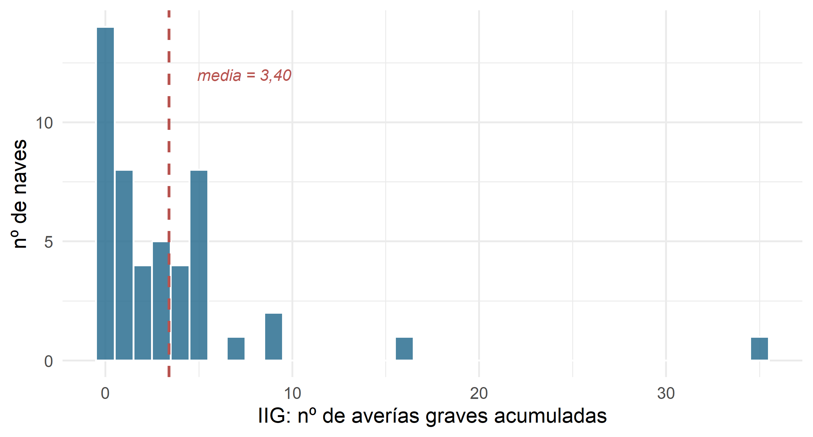
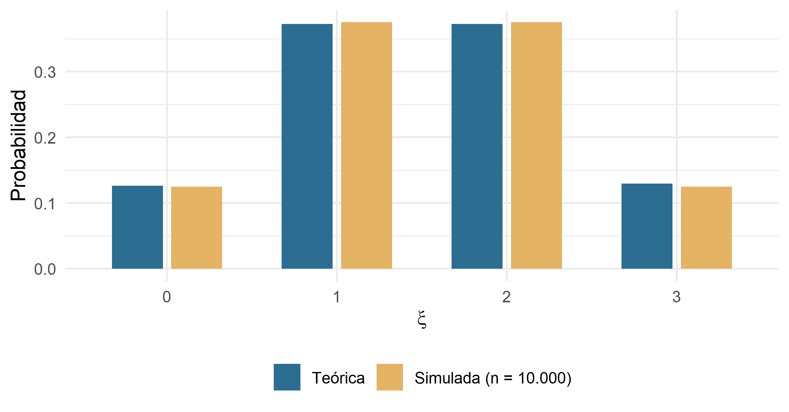

8 Variables aleatorias

Figura 8.1. Del azar bruto al azar domesticado: la variable aleatoria.
— Atribuido (con dudosa exactitud) al profesor Kepler-Bernoulli, cátedra de Estadística Empresarial de la Universidad Libre de Coruscant.
8.1 De la probabilidad a la variable aleatoria
En el capítulo anterior aprendimos a medir la incertidumbre. Dábamos con un experimento aleatorio, describíamos su espacio muestral \(E\), agrupábamos resultados en sucesos y asignábamos a cada suceso un número entre 0 y 1: su probabilidad. Un ejemplo doméstico: la empresa arrakis freight despacha esta noche un carguero por la ruta Arrakis–Klendathu. El experimento tiene dos resultados posibles: llega a tiempo o llega tarde. Con eso ya sabemos hablar en probabilidades.
Ahora bien, en cuanto la empresa despacha no uno, sino veintitrés cargueros, describir cada suceso con palabras se vuelve incómodo. Enumerar {tarde, tarde, a tiempo, tarde, a tiempo, ...} para las \(2^{23}\) combinaciones posibles sería tedioso incluso para un droide protocolario. Lo natural es asignar un número a cada resultado —por ejemplo, “número de cargueros que llegan a tiempo”— y trabajar con ese número.
Ese salto —del suceso al número— es exactamente lo que hace una variable aleatoria. Y con él ganamos dos cosas enormes:
- Podemos usar toda la maquinaria del cálculo (sumas, integrales, medias, varianzas) sobre los resultados de un experimento aleatorio.
- Podemos comparar experimentos completamente distintos —el tonelaje de un buque astillero KORRIGAN y el IDIG de una empresa de la Vía Láctea— con el mismo lenguaje matemático.
La idea intuitiva. Una variable aleatoria es, en el fondo, un traductor: coge cada resultado posible del experimento y lo convierte en un número. Después, cada número hereda la probabilidad del resultado del que proviene. La probabilidad, así, deja de vivir sobre “sucesos con nombre” y pasa a vivir sobre “números”.
8.2 Definición formal de variable aleatoria
Dado un espacio de probabilidad \((E, \Omega, P)\), se define una variable aleatoria \(\xi\) como una aplicación
\[ \xi : E \longrightarrow \mathbb{R} \]
que a cada resultado elemental \(e \in E\) le hace corresponder un número real \(\xi(e)\). Los sucesos —conjuntos de resultados— se transforman en conjuntos de números reales, y las probabilidades de los sucesos se convierten en probabilidades asociadas a esos números.
Una variable aleatoria queda perfectamente descrita cuando conocemos dos cosas:
- Su campo de variación: qué valores puede tomar.
- Su distribución de probabilidad: con qué probabilidad los toma.
8.2.1 Ejemplo I: los tres despachos nocturnos de arrakis freight
arrakis freight despacha cada noche tres cargueros por la ruta Arrakis–Giedi Prime. Cada despacho puede terminar en éxito (E) —el carguero atraviesa la tormenta de arena estelar y entrega la especia— o fracaso (F). Definimos:
\[ \xi = \text{"número de cargueros que llegan con éxito esta noche"}. \]
El espacio muestral tiene ocho resultados. Bajo el supuesto (idealizado) de que cada despacho es independiente y tiene probabilidad de éxito \(0{,}5\), la variable aleatoria \(\xi\) mapea los sucesos a números así:
| Suceso | \(\xi\) | \(P(\xi = x_i)\) |
|---|---|---|
| {F,F,F} | 0 | 1/8 |
| {E,F,F}, {F,E,F}, {F,F,E} | 1 | 3/8 |
| {E,E,F}, {E,F,E}, {F,E,E} | 2 | 3/8 |
| {E,E,E} | 3 | 1/8 |
Tabla 8.1. Variable aleatoria \(\\xi\): número de cargueros que llegan a Giedi Prime.
El campo de variación de \(\xi\) es \(\{0, 1, 2, 3\}\). La distribución de probabilidad es la lista de probabilidades asignadas a cada uno de esos valores. Con ese par de piezas ya podemos calcular cualquier cosa: la probabilidad de que lleguen al menos dos, la probabilidad de que no llegue ninguno (mala noche para las bonificaciones del gerente), etc.
8.2.2 Ejemplo II: la variable “tonelaje”
Fijémonos ahora en la base de datos astilleros_48. La variable TONELAJE recoge las toneladas métricas de cada nueva unidad salida del astillero KORRIGAN, SELENE o ARCTURUS. Si mañana el astillero KORRIGAN bota una nueva nave y llamamos
\[ \xi = \text{"tonelaje de la próxima nave botada por KORRIGAN"}, \]
entonces \(\xi\) puede tomar cualquier valor dentro de un rango razonable (digamos entre 600 y 1.000 toneladas). Ya no hay ocho resultados: hay infinitos. Este segundo ejemplo tiene una naturaleza radicalmente distinta al primero, y por eso —muy pronto— tendremos que distinguir entre variables aleatorias discretas y continuas.
8.3 Variable aleatoria vs. variable estadística
En los capítulos 1, 2 y 3 hablábamos también de “variables”. Analizábamos, por ejemplo, el SALARIO de los 49 trabajadores del holding, o el TONELAJE de las 48 unidades del fichero de astilleros. ¿En qué se parece —y en qué se diferencia— aquella variable estadística de la nueva variable aleatoria?
8.3.1 Lo que tienen en común
Ambas asocian un número a cada individuo o resultado. Ambas pueden ser discretas o continuas. Ambas admiten representaciones gráficas parecidas —histogramas, diagramas de barras—, y de ambas nos interesa la media, la dispersión, la asimetría… Un histograma es a la variable estadística lo que una función de densidad es a la variable aleatoria: la misma familia visual.
8.3.2 En qué se diferencian
La variable estadística vive en el mundo observado: ya se recogieron los 300 datos de la base interestelar_300 y podemos contar cuántas empresas tienen entre 20 y 30 cargueros. La variable aleatoria vive en el mundo posible: describe qué podría ocurrir en un experimento antes de realizarlo.
Dicho de otra forma:
- Variable estadística: fotografía de una muestra concreta. Las frecuencias son datos observados.
- Variable aleatoria: modelo teórico de un experimento. Las probabilidades son valores asignados a priori.
8.3.3 El puente frecuentista
¿Y por qué se parecen tanto? Porque el enfoque frecuentista de la probabilidad nos dice que, si repitiéramos el experimento muchas veces, las frecuencias relativas de cada resultado se estabilizarían en torno a un número: precisamente su probabilidad. Es decir, si observamos suficientes datos, la variable estadística tiende a comportarse como si fuera la realización empírica de una variable aleatoria subyacente. Es exactamente la Ley de los Grandes Números que ya conocimos en el capítulo anterior.
Ilustrémoslo. Tomemos la variable FLOTA de las 300 empresas de la base interestelar_300. Ese histograma es una fotografía descriptiva. Pero si pensamos que esas 300 empresas son una muestra de una “población interestelar” enorme, y que la flota de una empresa cualquiera es una variable aleatoria \(\xi\), entonces el histograma es una aproximación empírica a la distribución de probabilidad de \(\xi\).

Figura 8.2. Distribución empírica del número de cargueros por empresa en interestelar_300. Bajo el enfoque frecuentista, este histograma es una aproximación a la distribución de probabilidad de la variable aleatoria ‘flota de una empresa cualquiera’.
La barra que muestra “hay tantas empresas con flotas entre 20 y 24 cargueros” es un dato descriptivo. Pero si dividimos su altura por el total y por la anchura del intervalo, empieza a parecerse mucho a un valor de probabilidad. Ese es el puente: la estadística descriptiva y la teoría de la probabilidad se dan la mano en el límite, cuando la muestra crece.
Regla mnemotécnica. La variable estadística cuenta; la variable aleatoria predice. La primera trabaja con lo que ya ocurrió; la segunda, con lo que puede ocurrir. Y en el límite —cuando repetimos el experimento muchas veces— las dos convergen.
8.4 Función de distribución
Hasta aquí hemos hablado de “distribución de probabilidad” de forma un tanto informal. Toca darle nombre y apellidos. La forma canónica —y universal, sirve tanto para discretas como para continuas— de expresar la distribución de una variable aleatoria es la función de distribución.
Se define como
\[ F(x) = P(\xi \le x), \qquad \forall x \in \mathbb{R}. \]
Dicho con palabras: \(F(x)\) es la probabilidad de que la variable aleatoria tome un valor menor o igual que \(x\). Es una función acumulativa: va sumando probabilidad de izquierda a derecha. En inglés se la conoce también como cumulative distribution function (CDF), abreviatura que se encontrará el estudiante una y otra vez en la literatura de econometría o data science.
8.4.1 Propiedades
La función de distribución cumple, para cualquier variable aleatoria:
- \(0 \le F(x) \le 1\) para todo \(x\).
- \(\lim_{x \to -\infty} F(x) = 0\) y \(\lim_{x \to +\infty} F(x) = 1\).
- Es no decreciente: si \(x_1 < x_2\), entonces \(F(x_1) \le F(x_2)\).
- Es continua por la derecha.
Las dos primeras propiedades son casi de sentido común (probabilidad total = 1, mínima = 0). La tercera dice que, al mover \(x\) hacia la derecha, sólo podemos acumular más probabilidad, nunca menos. La cuarta es una tecnicalidad importante en las variables discretas, donde \(F\) da saltos.
8.5 Variables aleatorias discretas
Una variable aleatoria \(\xi\) es discreta cuando su campo de variación se compone de un número finito o infinito numerable de puntos. Entre esos puntos hay “huecos”: la variable no puede tomar valores intermedios.
Los ejemplos discretos abundan en RStars:
- El número de cargueros que despacha una empresa en una noche.
- El número de rutas activas de hyperdrive express en un trimestre.
- El número de empleados de una empresa (
EMPLEA). - El número de averías graves acumuladas por una nave a lo largo de su vida (
IIG).
Todos son enteros. No hay 26,7 cargueros ni 14,3 empleados. Y si los hay, mal asunto para la empresa.
8.5.1 Función de cuantía (o función de masa)
Para una variable discreta, la forma más directa de describir su distribución es asignando a cada valor posible su probabilidad. Esa función se llama función de cuantía o función de masa de probabilidad (probability mass function, PMF, en la literatura anglosajona):
\[ p_i = P(\xi = x_i), \qquad p_i > 0, \qquad \sum_i p_i = 1. \]
Dicho gráficamente: para cada valor \(x_i\) en el campo de variación, \(p_i\) te dice qué cantidad de probabilidad tiene pegada. La suma de todas esas cantidades debe dar 1: la probabilidad total no puede desaparecer ni fugarse a otra galaxia.
8.5.2 Relación con la función de distribución
En una variable discreta, la función de distribución se obtiene simplemente acumulando las probabilidades:
\[ F(x) = P(\xi \le x) = \sum_{x_i \le x} p_i. \]
Es una función escalonada: constante entre valores del campo de variación, y con saltos exactamente iguales a \(p_i\) en cada valor \(x_i\).
8.5.3 Ejemplo: los despachos nocturnos, otra vez
Volvamos a arrakis freight y sus tres despachos independientes con probabilidad de éxito \(0{,}5\). La variable \(\xi\) = “número de éxitos” es discreta con campo de variación \(\{0, 1, 2, 3\}\). Su función de cuantía y su función de distribución son:
| \(x_i\) | \(p_i = P(\xi = x_i)\) | \(F(x_i) = P(\xi \le x_i)\) |
|---|---|---|
| 0 | 1/8 | 1/8 |
| 1 | 3/8 | 4/8 |
| 2 | 3/8 | 7/8 |
| 3 | 1/8 | 8/8 = 1 |
Tabla 8.2. Función de cuantía y de distribución de \(\\xi\) = número de cargueros a tiempo.
Y así se ve la cosa:

Figura 8.3. Función de cuantía (izquierda) y función de distribución (derecha) de \(\\xi\): número de cargueros a tiempo en arrakis freight.
Los saltos de la función de distribución tienen exactamente la altura de las cuantías: \(1/8\), \(3/8\), \(3/8\), \(1/8\). La probabilidad no se pierde en ningún tramo horizontal: sólo se acumula en los saltos.
8.6 Variables aleatorias continuas
Una variable aleatoria \(\xi\) es continua cuando el número de valores que puede tomar es infinito no numerable. Es decir, puede tomar cualquier valor dentro de un intervalo real.
Ejemplos naturales en RStars:
- El tonelaje exacto de una nueva unidad KORRIGAN.
- El ingreso operativo mensual de hyperdrive express.
- El tiempo que tarda un carguero en cruzar la Vía Láctea.
- La distancia recorrida por la flota de starship express durante un año fiscal (
DIST).
Nada de esto es un entero. El tonelaje puede ser 850,4 toneladas, o 850,437 toneladas, o —si tenemos suficiente precisión— cualquier número real razonable.
8.6.1 La primera consecuencia sorprendente: puntos con probabilidad cero
Aquí conviene sentarse. En una variable aleatoria continua, la probabilidad de que \(\xi\) tome un valor exacto es cero:
\[ P(\xi = a) = 0 \quad \text{para cualquier } a. \]
Parece contraintuitivo. ¿Cómo va a ser nula la probabilidad de que la nueva nave pese exactamente 850 toneladas si acaba de salir de la grada con esa cifra en el certificado? La respuesta es que, si medimos con precisión infinita, casi seguro pesará \(850{,}00000000001...\), o cualquier otro valor “vecino” con infinitos decimales. Entre dos valores cualesquiera del campo de variación hay infinitos valores intermedios, y la probabilidad total (que vale 1) debe repartirse entre todos ellos. A cada uno le toca literalmente nada.
Por eso, en variables continuas, sólo tiene sentido hablar de probabilidades de intervalos: \(P(a < \xi \le b)\).
8.6.2 Función de densidad
Para una variable continua, la función de distribución \(F(x)\) es continua y derivable. Su derivada es una función especial llamada función de densidad (probability density function, PDF):
\[ f(x) = \lim_{\Delta x \to 0} \frac{F(x + \Delta x) - F(x)}{\Delta x} = F'(x). \]
La función de densidad cumple dos condiciones:
\[ f(x) \ge 0 \qquad \text{y} \qquad \int_{-\infty}^{+\infty} f(x)\, dx = 1. \]
Cuidado: la densidad NO es una probabilidad. Es más bien una velocidad de acumulación de probabilidad. Puede tomar valores mayores que 1 sin que el universo tiemble. Lo que sí es una probabilidad es \(f(x)\,dx\): la probabilidad asignada a un intervalo infinitesimal alrededor de \(x\). O, más útil aún, el área bajo la curva de \(f\) en un intervalo:
\[ P(a < \xi \le b) = \int_a^b f(x)\, dx = F(b) - F(a). \]
8.6.3 Un ejemplo con las nuevas grúas del astillero KORRIGAN
El astillero KORRIGAN acaba de instalar nuevas grúas de manipulación de cargamentos, y la comisión de calidad estima que el tiempo (en horas) que la grúa tarda en descargar un contenedor estándar se comporta como una variable aleatoria continua \(\xi\) con función de densidad:
\[ f(x) = \begin{cases} \dfrac{1}{8} x & \text{si } 0 < x < 4 \\[3pt] 0 & \text{en el resto.} \end{cases} \]
Contexto pedagógico: que sea creciente en \([0, 4]\) significa que tiempos más largos son más probables que tiempos cortos —tiene sentido si la grúa arranca despacio y tiende a estabilizarse en su tiempo máximo—. Un modelo así es habitual cuando se estudia el rendimiento de maquinaria que necesita calentar.
Nos preguntamos cuál es la probabilidad de que la grúa tarde entre 1 y 2 horas en descargar un contenedor:
\[ P(1 < \xi < 2) = \int_1^2 \frac{1}{8} x\, dx = \frac{1}{8} \cdot \left[\frac{x^2}{2}\right]_1^2 = \frac{1}{8} \cdot \left(2 - \frac{1}{2}\right) = \frac{3}{16} \approx 0{,}1875. \]
Geométricamente:

Figura 8.4. Función de densidad del tiempo de descarga (horas) en la nueva grúa KORRIGAN. El área sombreada es \(P(1 < \\xi < 2) = 3/16\).
8.6.4 La lectura visual: área bajo la curva
Este es el hábito mental que conviene fijar para siempre: en variables continuas, las probabilidades son áreas. La función de densidad no dice cuánta probabilidad hay en un punto; dice cuánta hay por unidad de campo en el entorno de ese punto. Para conseguir una probabilidad de verdad, hay que integrar.
8.7 Características de las variables aleatorias
Ya tenemos definida la variable aleatoria y sabemos describirla con su función de distribución (o su cuantía, o su densidad, según sea discreta o continua). Ahora, igual que en estadística descriptiva calculábamos la media, la varianza o la asimetría, aquí definiremos las mismas ideas —pero en clave probabilística—.
8.7.1 Momentos: la maquinaria común
Los momentos son la herramienta que resume toda una distribución en un puñado de números. Hay dos familias.
Momentos respecto al origen, de orden \(r\):
\[ \alpha_r = E(\xi^r) = \begin{cases} \displaystyle \sum_i x_i^r \cdot p_i & \text{caso discreto} \\[6pt] \displaystyle \int_{-\infty}^{+\infty} x^r \cdot f(x)\, dx & \text{caso continuo.} \end{cases} \]
Momentos respecto a la media, de orden \(r\):
\[ \mu_r = E\left[(\xi - \mu)^r\right], \qquad \mu = \alpha_1. \]
De todos ellos, los cuatro primeros tienen nombre propio y significado empresarial: la esperanza (dónde está el centro), la varianza (cómo de dispersa está la distribución), la asimetría (si se inclina hacia un lado) y la curtosis (si tiene colas gruesas o finas). Los estudiaremos por orden, del más importante al menos.
8.7.2 Esperanza matemática
La esperanza matemática —también llamada valor esperado, media teórica o simplemente esperanza— es el valor alrededor del cual se concentra una distribución de probabilidad. Matemáticamente es el momento de orden 1 respecto al origen:
\[ \mu = E(\xi) = \alpha_1 = \begin{cases} \displaystyle \sum_i x_i \cdot p_i & \text{caso discreto} \\[6pt] \displaystyle \int_{-\infty}^{+\infty} x \cdot f(x)\, dx & \text{caso continuo.} \end{cases} \]
La intuición del casino galáctico. La esperanza es el promedio a largo plazo. Si repitiéramos el experimento un número enorme de veces, la media aritmética de los resultados observados tendería al valor \(E(\xi)\). Por eso las casas de apuestas de Coruscant nunca quiebran: aunque en cada partida individual pueden perder, la esperanza matemática de la ganancia por partida —de ellos, no del jugador— es positiva.
8.7.2.1 Ejemplo discreto: cargueros a tiempo
Retomemos a arrakis freight. La esperanza del número de cargueros a tiempo es:
\[ E(\xi) = 0 \cdot \tfrac{1}{8} + 1 \cdot \tfrac{3}{8} + 2 \cdot \tfrac{3}{8} + 3 \cdot \tfrac{1}{8} = \tfrac{12}{8} = 1{,}5. \]
A la larga, esperamos \(1{,}5\) éxitos por noche. Que ninguna noche concreta vaya a haber “medio carguero a tiempo” no es problema del modelo: la esperanza es un promedio a largo plazo, no una cifra realizable individualmente.
8.7.2.2 Ejemplo continuo: la grúa KORRIGAN
Para la variable continua del tiempo de descarga:
\[ E(\xi) = \int_0^4 x \cdot \frac{x}{8}\, dx = \frac{1}{8} \int_0^4 x^2\, dx = \frac{1}{8} \cdot \frac{4^3}{3} = \frac{64}{24} = \frac{8}{3} \approx 2{,}67 \text{ horas.} \]
Cada contenedor tarda, en promedio, unas 2 horas y 40 minutos en descargarse.
8.7.2.3 Propiedades de la esperanza
La esperanza es una máquina de linealidad exquisita:
- \(E(C) = C\) si \(C\) es una constante.
- \(E(\xi_1 \pm \xi_2 \pm \cdots \pm \xi_n) = E(\xi_1) \pm E(\xi_2) \pm \cdots \pm E(\xi_n)\).
- \(E(\xi_1 \cdot \xi_2 \cdots \xi_n) = E(\xi_1) \cdot E(\xi_2) \cdots E(\xi_n)\) si y sólo si las variables son independientes.
- Si \(E(\xi) = \mu\), entonces \(E(\xi - \mu) = 0\).
- \(E(A + B\xi) = A + B \cdot E(\xi)\) si \(A, B\) son constantes.
La propiedad 2 —que la esperanza de una suma es la suma de esperanzas— es una de las más útiles de la teoría de la probabilidad, y funciona incluso cuando las variables no son independientes. La 3, en cambio, exige independencia.
8.7.3 Varianza y desviación típica
La varianza mide la dispersión de la variable aleatoria respecto a su esperanza. Matemáticamente es el momento de orden 2 respecto a la media:
\[ \mathrm{Var}(\xi) = \sigma^2 = \mu_2 = E\left[(\xi - \mu)^2\right] = E(\xi^2) - [E(\xi)]^2 = \alpha_2 - \alpha_1^2. \]
La última expresión —varianza igual al momento de orden 2 respecto al origen menos la esperanza al cuadrado— es la fórmula de cálculo más cómoda y la que se usa en el 90 % de los problemas.
La raíz positiva de la varianza es la desviación típica:
\[ \sigma = +\sqrt{\sigma^2}. \]
Traducción intuitiva. La esperanza dice dónde está el centro; la varianza dice cómo de repartida está la distribución alrededor de ese centro. Una varianza pequeña indica valores muy concentrados en torno a la media; una varianza grande, valores dispersos —y por tanto un experimento más incierto—. En finanzas, la desviación típica de la rentabilidad de un activo es, literalmente, el nombre que reciben los “riesgos” a corto plazo.
8.7.3.1 Ejemplo discreto: cargueros a tiempo
Retomando el ejemplo:
\[ \begin{aligned} E(\xi) &= 1{,}5 \\ E(\xi^2) &= 0^2 \cdot \tfrac{1}{8} + 1^2 \cdot \tfrac{3}{8} + 2^2 \cdot \tfrac{3}{8} + 3^2 \cdot \tfrac{1}{8} = 3 \\ \mathrm{Var}(\xi) &= 3 - (1{,}5)^2 = 0{,}75 \\ \sigma &= \sqrt{0{,}75} \approx 0{,}866. \end{aligned} \]
8.7.3.2 Ejemplo continuo: la grúa KORRIGAN
\[ \begin{aligned} E(\xi) &= \tfrac{8}{3} \\ E(\xi^2) &= \int_0^4 x^2 \cdot \frac{x}{8}\, dx = \frac{1}{8} \cdot \frac{4^4}{4} = 8 \\ \mathrm{Var}(\xi) &= 8 - \left(\tfrac{8}{3}\right)^2 = 8 - \tfrac{64}{9} = \tfrac{8}{9} \approx 0{,}889 \\ \sigma &\approx 0{,}943 \text{ horas.} \end{aligned} \]
En promedio, cada contenedor tarda 2h 40min en descargarse, con una variabilidad típica de unos 57 minutos. El jefe de operaciones ya sabe qué margen dejar en la planificación.
8.7.3.3 Propiedades de la varianza
- \(\mathrm{Var}(\xi) = \sigma^2 \ge 0\). (Al elevar al cuadrado, nunca sale negativa. Y sólo vale 0 si la variable es constante, en cuyo caso apenas merece llamarse “aleatoria”.)
- \(\mathrm{Var}(\xi_1 \pm \xi_2 \pm \cdots \pm \xi_n) = \mathrm{Var}(\xi_1) + \mathrm{Var}(\xi_2) + \cdots + \mathrm{Var}(\xi_n)\) si y sólo si las variables son independientes. (Aunque el signo sea de resta, las varianzas se suman. La razón: la varianza mide “cuánto oscila” la variable, y dos oscilaciones independientes se acumulan aunque una se reste de la otra.)
- \(\mathrm{Var}(A + B\xi) = B^2 \cdot \mathrm{Var}(\xi)\) si \(A, B\) son constantes. (Sumar una constante no cambia la dispersión; multiplicar por \(B\) cambia la escala en \(|B|\), así que la varianza se escala en \(B^2\).)
8.7.4 La variable tipificada (o estandarizada)
De todas las transformaciones que se le pueden aplicar a una variable aleatoria, una destaca por su enorme utilidad práctica: la tipificación o estandarización. Consiste en restar la esperanza y dividir por la desviación típica:
\[ Z \;=\; \frac{\xi - \mu}{\sigma}. \]
La variable \(Z\) resultante tiene siempre, por construcción, esperanza \(E(Z) = 0\) y varianza \(\mathrm{Var}(Z) = 1\), sea cual sea la variable de la que se parte. Es decir, la tipificación coloca cualquier distribución en una escala común: cero es “estar en la media”, uno es “estar a una desviación típica por encima”, menos uno “a una por debajo”.
Esta idea, que ahora puede parecer un juego algebraico, resultará decisiva cuando lleguemos a la distribución normal: nos permitirá reducir toda normal a una única —la normal estándar— y consultar sus probabilidades en tablas o funciones únicas. Y es la manera en que los analistas comparan magnitudes tan dispares como la rentabilidad de un fondo (en %), el tamaño de una empresa (en miles de PAVOs) o el número de rutas (en enteros): todas ellas se pueden traducir a “unidades de desviación típica” y compararse en pie de igualdad.
Regla práctica. Cuando alguien dice “esta empresa está tres sigmas por encima de la media del sector”, está usando implícitamente una variable tipificada. Y cuando un banco pone un umbral de “score de riesgo por encima de 2”, suele significar “más de dos desviaciones típicas por encima del riesgo esperado”. Aprender a leer en unidades de \(\sigma\) es la puerta de entrada a la lectura financiera moderna.
8.7.5 Asimetría y curtosis: los momentos que faltan
Con la esperanza (orden 1) y la varianza (orden 2) capturamos dónde está la distribución y cuánto oscila. Pero dos distribuciones con la misma media y la misma varianza pueden ser muy distintas: una simétrica y bien portada, otra inclinada hacia un lado, otra con colas muy largas donde de vez en cuando aparecen valores extremos. Para capturar esa “forma”, necesitamos los momentos de orden 3 y 4, respectivamente asimetría y curtosis.
Se definen habitualmente en su forma estandarizada (dividiendo por la desviación típica al cubo o a la cuarta, para hacerlos comparables entre distribuciones):
\[ \gamma_1 \;=\; \frac{E\!\left[(\xi - \mu)^3\right]}{\sigma^3} \qquad \text{(coeficiente de asimetría)} \]
\[ \gamma_2 \;=\; \frac{E\!\left[(\xi - \mu)^4\right]}{\sigma^4} - 3 \qquad \text{(exceso de curtosis)} \]
La lectura empresarial es sencilla:
- Asimetría \(\gamma_1\): si es cero, la distribución es simétrica alrededor de la media; si es positiva, tiene una cola larga hacia la derecha (valores altos raros pero posibles); si es negativa, la cola larga está a la izquierda.
- Curtosis (exceso) \(\gamma_2\): si es cero, la forma es “normal” (la campana de Gauss se toma como referencia); si es positiva, la distribución es leptocúrtica —tiene colas más gruesas que la normal—; si es negativa, es platicúrtica —colas más finas—. Se resta 3 en la definición precisamente para que la normal tenga curtosis 0 como referencia.
Nada de esto es abstracto en el mundo económico. La distribución de la variable IIG (número de averías graves acumuladas por una nave) del fichero astilleros_48 es un ejemplo perfecto de asimetría positiva con colas gruesas: la mayoría de las naves acumulan pocas averías, pero una tiene 35 y otra 16.

Figura 8.5. Distribución empírica del número de averías graves acumuladas (IIG) por las 48 naves del fichero de astilleros. Fuerte asimetría a la derecha y presencia de valores extremos: un caso paradigmático de distribución con cola pesada.
Este patrón es, precisamente, el que interesa vigilar en gestión de riesgos: no importa tanto la nave “media” como esa cola larga que agrupa las poquísimas naves problemáticas que, sin embargo, concentran el grueso de los costes de mantenimiento. En finanzas se emplea la misma idea: los retornos de un activo pueden tener media y varianza dignas, pero si su curtosis es alta —colas gruesas—, quedan expuestos a eventos raros pero catastróficos. Es la lección de los “cisnes negros” de Nassim Taleb, y su descubrimiento tardío por parte de algunos gestores bancarios costó, allá por 2008, muy caro.
8.7.6 Transformaciones de una variable aleatoria
En muchas situaciones económicas, la variable aleatoria de interés no es la observada directamente, sino una función de ella. Un economista que estudia los ingresos \(\xi\) puede querer trabajar con su logaritmo, \(Y = \log \xi\), para modelar retornos porcentuales. Un actuario que estudia los siniestros \(\xi\) puede querer estudiar \(Y = \max(\xi - k, 0)\), el pago del seguro con franquicia \(k\). Un inversor puede querer transformar los retornos \(\xi\) mediante una función de utilidad cóncava \(U(\xi)\) que refleje su aversión al riesgo.
En todos estos casos, tenemos una nueva variable aleatoria \(Y = g(\xi)\). Y afortunadamente, para calcular su esperanza no hace falta derivar antes la distribución de \(Y\); basta con integrar la función \(g\) ponderada por la distribución original:
\[ E[g(\xi)] = \begin{cases} \displaystyle \sum_i g(x_i) \cdot p_i & \text{caso discreto} \\[6pt] \displaystyle \int_{-\infty}^{+\infty} g(x) \cdot f(x)\, dx & \text{caso continuo.} \end{cases} \]
Este resultado, tan cómodo como poderoso, se conoce en la literatura como regla del estadístico inconsciente (Law of the Unconscious Statistician, LOTUS): calculamos la esperanza de la nueva variable “sin darnos cuenta” de que tendríamos que haber pasado por su distribución. Es, sin exagerar, uno de los tres o cuatro resultados que un estudiante de ADE debería memorizar para siempre.
Ejemplo económico. Supongamos que los beneficios netos \(\xi\) (en miles de PAVOs) de una filial de hyperdrive express siguen una distribución con esperanza \(E(\xi) = 200\) y varianza \(\mathrm{Var}(\xi) = 400\). La casa matriz aplica un impuesto de sociedades del \(25\,\%\) sobre los beneficios positivos, más una tasa fija de \(10\) miles de PAVOs. El pago fiscal es la variable aleatoria \(Y = 10 + 0{,}25\, \xi\). Por linealidad de la esperanza:
\[ E(Y) = 10 + 0{,}25 \cdot 200 = 60, \qquad \mathrm{Var}(Y) = 0{,}25^2 \cdot 400 = 25. \]
Es decir, la casa matriz puede planificar un pago fiscal esperado de \(60\) miles de PAVOs con una desviación típica de \(5\): información imprescindible para su tesorería. Y todo ello sin necesidad de conocer la distribución exacta de los beneficios.
8.7.7 Una cota general: la desigualdad de Chebyshev
Antes de cerrar el bloque de características, conviene presentar un resultado sorprendentemente potente: con sólo conocer la media y la desviación típica de una variable aleatoria, ya podemos poner cotas a la probabilidad de que la variable se aleje mucho de su centro, sin importar cuál sea su distribución.
Desigualdad de Chebyshev. Para cualquier variable aleatoria \(\xi\) con esperanza \(\mu\) y desviación típica \(\sigma\) finita, y para cualquier constante \(k > 0\):
\[ P\!\left(|\xi - \mu| \ge k \sigma \right) \;\le\; \frac{1}{k^2}. \]
Lectura: la probabilidad de que la variable se aleje de la media más de \(k\) desviaciones típicas es, como mucho, \(1/k^2\). Para \(k = 2\), no más del \(25\,\%\) de las veces; para \(k = 3\), no más del \(11\,\%\); para \(k = 5\), no más del \(4\,\%\). Y esto para cualquier distribución, sin necesidad de hipótesis sobre su forma. Es el equivalente probabilístico de un “seguro contra sorpresas”: aun sin saber cómo se comporta exactamente una variable, sabemos que no puede desmadrarse impunemente.
En la práctica, cuando la distribución es conocida (por ejemplo, la normal), las cotas exactas son mucho más ajustadas que las de Chebyshev. La utilidad de la desigualdad es precisamente cuando no conocemos la distribución: nos protege ante lo desconocido.

8.8 Decisión bajo incertidumbre: media, varianza y elección racional
Antes de cerrar este bloque unidimensional, dediquemos una sección a la utilidad económica de la esperanza y la varianza. Porque, a fin de cuentas, ¿para qué queremos toda esta maquinaria?
El operador logístico de Kaiju Haulage Co. debe elegir entre dos rutas alternativas para su próximo trimestre. Los ingenieros han modelado el beneficio (en miles de PAVOs) que cada ruta generará como una variable aleatoria:
- Ruta A (ruta segura, dentro de la Vía Láctea): \(E(\xi_A) = 100\), \(\sigma_A = 20\).
- Ruta B (ruta larga hacia Andrómeda): \(E(\xi_B) = 130\), \(\sigma_B = 60\).
¿Cuál elegir?
Si el criterio fuera puramente el beneficio esperado, la respuesta es inmediata: B, con \(130 > 100\). Pero eso ignora el riesgo. Con la desigualdad de Chebyshev sabemos que, en la ruta B, el beneficio puede alejarse fácilmente de \(130\) en dos \(\sigma\): podría caer a \(10\) mil PAVOs (o menos) en un trimestre malo. En la ruta A, la caída correspondiente lleva el beneficio a \(60\): mucho más contenida.
La elección racional depende de la actitud frente al riesgo del decisor:
- Un decisor neutral al riesgo elige por la esperanza. Iría a la ruta B.
- Un decisor averso al riesgo penaliza la varianza. Aparece de forma natural el criterio media-varianza: elegir la alternativa que maximiza \(E(\xi) - \lambda \cdot \mathrm{Var}(\xi)\), con \(\lambda > 0\) un coeficiente de aversión al riesgo. Si \(\lambda = 0{,}02\), por ejemplo, la ruta A puntúa \(100 - 0{,}02 \cdot 400 = 92\) y la B puntúa \(130 - 0{,}02 \cdot 3600 = 58\): ganaría la A.
- Un decisor amante del riesgo (raro, pero existe) iría a la B, y quizá también a la C si la hubiera.
Este razonamiento —resumir una alternativa por su pareja \((\mu, \sigma^2)\) y elegir entre pares— es la base del análisis media-varianza de carteras desarrollado por Harry Markowitz en los años 50, que le valió el Nobel de Economía en 1990 y sigue siendo el punto de partida canónico de las finanzas modernas. Que la lección esencial de un curso introductorio de probabilidad sea, precisamente, la base de las finanzas contemporáneas dice bastante sobre la centralidad de estos conceptos.
8.9 Variables aleatorias bidimensionales
Hasta ahora hemos trabajado con una variable aleatoria. Pero en el mundo empresarial casi nada ocurre en solitario. Nos interesa, por ejemplo, saber si el número de rutas de una empresa y su número de empleados van de la mano, o si el tonelaje de una nave y su antigüedad guardan relación. Aparece entonces la idea de variable aleatoria bidimensional.
Sin entrar en la maquinaria pesada —que se parece mucho a la unidimensional, sólo que con dos “ejes” de probabilidad—, quedémonos con los conceptos clave.
8.9.1 La idea
Una variable aleatoria bidimensional es un vector \((\xi, \eta)\) cuyas componentes son dos variables aleatorias definidas sobre el mismo experimento. Por ejemplo:
\[ (\xi, \eta) = (\text{tonelaje de una nave KORRIGAN},\ \text{antigüedad de la nave}). \]
Ambas se observan a la vez. La descripción probabilística conjunta responde a preguntas del estilo: ¿cuál es la probabilidad de que una nave elegida al azar pese entre 800 y 900 toneladas y tenga menos de 5 años?
8.9.2 Función de distribución conjunta
Se define, como en el caso unidimensional, de forma acumulativa:
\[ F(x, y) = P(\xi \le x,\ \eta \le y). \]
La probabilidad se acumula ahora en el plano en lugar de en la recta.
8.9.3 Distribuciones marginales
Si la conjunta \(F(x, y)\) describe cómo se reparte la probabilidad en el plano, las distribuciones marginales describen cómo se comporta cada componente por separado. Se obtienen “olvidándonos” de la otra variable:
- En el caso discreto: \(p_{i \bullet} = \sum_j p_{ij}\) y \(p_{\bullet j} = \sum_i p_{ij}\).
- En el caso continuo: \(f_\xi(x) = \int f(x, y)\, dy\) y \(f_\eta(y) = \int f(x, y)\, dx\).
Dicho de otra forma: la distribución marginal de \(\xi\) es la que veríamos si ignorásemos completamente \(\eta\). Es la distribución de \(\xi\) tal cual, sin más.
8.9.4 Ejemplo intuitivo: la Comisión Interestelar de Transporte
Imaginemos que la Comisión Interestelar de Transporte (CIT) audita al azar una empresa de la base interestelar_300. Define:
- \(\xi\) = “número de galaxias en las que opera la empresa” (1, 2 o 3).
- \(\eta\) = “categoría de antigüedad de flota”, que toma los valores RENOVADA, MADURA, ANTIGUA.
La CIT ha estimado la siguiente función de cuantía conjunta:
| \(\xi \backslash \eta\) | RENOVADA | MADURA | ANTIGUA | Marginal \(\xi\) |
|---|---|---|---|---|
| 1 galaxia | 0.05 | 0.1 | 0.2 | 0,35 |
| 2 galaxias | 0.08 | 0.15 | 0.2 | 0,43 |
| 3 galaxias | 0.07 | 0.05 | 0.1 | 0,22 |
| Marginal \(\eta\) | 0,20 | 0,30 | 0,50 | 1,00 |
Tabla 8.3. Función de cuantía conjunta de \((\\xi, \\eta)\) para las empresas auditadas por la CIT. Las marginales se leen en los márgenes derecho e inferior.
De aquí se lee, por ejemplo, que la probabilidad de que la empresa auditada opere en 2 galaxias y tenga flota MADURA es \(0{,}15\). Que opere en 3 galaxias, sea cual sea su flota, es \(0{,}22\) (la marginal de \(\xi\) para el valor 3). Y así con todo.
8.9.5 Independencia
Dos variables aleatorias \(\xi\) y \(\eta\) son independientes cuando el valor que toma una no aporta información sobre el valor que toma la otra. Matemáticamente:
- Caso discreto: \(p_{ij} = p_{i \bullet} \cdot p_{\bullet j}\) para todos los pares.
- Caso continuo: \(f(x, y) = f_\xi(x) \cdot f_\eta(y)\).
En el ejemplo de la CIT, ¿son \(\xi\) y \(\eta\) independientes? Miremos la casilla \((3 \text{ galaxias}, \text{RENOVADA})\): la conjunta vale \(0{,}07\). El producto de marginales vale \(0{,}22 \cdot 0{,}20 = 0{,}044\). Como \(0{,}07 \ne 0{,}044\), no son independientes. Lo cual tiene sentido: probablemente una empresa que opera en tres galaxias tenga más incentivos —y más presupuesto— para renovar flota.
8.9.6 Covarianza: el resumen bidimensional
De todos los momentos bidimensionales, el que más nos interesa es la covarianza:
\[ \mathrm{Cov}(\xi, \eta) = \sigma_{\xi\eta} = E\left[(\xi - E(\xi))(\eta - E(\eta))\right] = E(\xi \cdot \eta) - E(\xi) \cdot E(\eta). \]
La covarianza mide si \(\xi\) y \(\eta\) tienden a moverse juntas (\(\sigma_{\xi\eta} > 0\)), en direcciones opuestas (\(\sigma_{\xi\eta} < 0\)) o si son ajenas la una a la otra (\(\sigma_{\xi\eta} \approx 0\)).
Propiedad útil. Si dos variables aleatorias son independientes, su covarianza es nula. El recíproco, en cambio, no siempre se cumple: puede haber variables con covarianza cero que estén relacionadas de forma no lineal. Es una lección que muchos analistas de la Federación Comercial han tenido que aprender por las malas.
8.9.7 Coeficiente de correlación: la versión normalizada
La covarianza tiene un defecto molesto: sus unidades son “unidades de \(\xi\) por unidades de \(\eta\)”, con lo cual su valor absoluto depende de las escalas empleadas. Una covarianza de \(500\) entre ingresos (miles de PAVOs) y flota (nº de naves) no dice, por sí sola, si la relación es fuerte o débil.
La solución la aporta el coeficiente de correlación de Pearson, la versión estandarizada de la covarianza:
\[ \rho_{\xi\eta} \;=\; \frac{\mathrm{Cov}(\xi, \eta)}{\sigma_\xi \cdot \sigma_\eta}. \]
Este número —el mismo que se estudió en el capítulo 3 sobre variables estadísticas bidimensionales— cumple siempre que \(-1 \le \rho_{\xi\eta} \le 1\):
- \(\rho = 1\): relación lineal positiva perfecta (cuando una crece, la otra crece exactamente en proporción fija).
- \(\rho = -1\): relación lineal negativa perfecta.
- \(\rho = 0\): no hay relación lineal (puede haber otras, no lineales).
- Valores intermedios miden la intensidad y el signo de la relación lineal.
La ventaja: es adimensional y comparable entre pares de variables muy distintos. En finanzas se emplea de forma masiva para medir la relación entre rentabilidades de activos, y es la piedra angular sobre la que se construye la diversificación de carteras: combinar activos con correlación baja (o negativa) reduce el riesgo total sin sacrificar necesariamente la rentabilidad esperada. La correlación es, en efecto, uno de los pocos conceptos estadísticos que tienen valor de mercado.
8.10 Simulación de variables aleatorias con R
Todo lo visto hasta ahora es matemática pura. Pero, en la práctica del día a día del analista, muchas veces basta con simular la variable aleatoria en el ordenador: pedirle a R que “invente” miles de realizaciones plausibles del experimento y estudiar sus propiedades de forma empírica. Es la manera moderna, potentísima y bastante lúdica de trabajar con variables aleatorias.
R proporciona funciones estándar para simular las distribuciones más habituales. Por ejemplo, el fragmento siguiente simula \(10\,000\) noches de arrakis freight (con tres despachos por noche, cada uno con probabilidad de éxito \(0{,}5\)) y compara la frecuencia empírica de cada resultado con la probabilidad teórica:
set.seed(8)
n_sim <- 10000
xi_sim <- rbinom(n_sim, size = 3, prob = 0.5)
comparacion <- tibble(
x = 0:3,
teorica = c(1, 3, 3, 1) / 8,
simulada = as.numeric(table(factor(xi_sim, levels = 0:3))) / n_sim
) %>%
pivot_longer(-x, names_to = "tipo", values_to = "prob")
ggplot(comparacion, aes(x = factor(x), y = prob, fill = tipo)) +
geom_col(position = position_dodge(width = 0.7), width = 0.6) +
scale_fill_manual(values = c(teorica = col_soft, simulada = col_disc),
labels = c("Teórica", "Simulada (n = 10.000)")) +
labs(x = expression(xi), y = "Probabilidad", fill = NULL) +
theme_minimal(base_size = 12) +
theme(legend.position = "bottom")
Figura 8.7. Comparación entre la distribución teórica de \(\\xi\) (barras claras) y la distribución empírica obtenida simulando 10.000 noches (barras oscuras). Con tantas repeticiones, ambas se solapan casi perfectamente: Ley de los Grandes Números en acción.
Cuatro líneas de código y hemos verificado empíricamente lo que la teoría nos dice. Este enfoque —simulación de Monte Carlo, ya mencionado en el capítulo anterior— es la herramienta cotidiana del analista de riesgos financieros, del actuario, del ingeniero de fiabilidad y del científico de datos. Cuando una variable aleatoria es demasiado complicada para calcular sus propiedades analíticamente, simulamos miles (o millones) de realizaciones y aproximamos lo que queramos: esperanzas, varianzas, cuantiles, probabilidades de sucesos raros. Un salto conceptual enorme respecto a la estadística de hace medio siglo.
8.11 Cierre
Recapitulemos el viaje del capítulo:
- Partimos de la probabilidad y aprendimos a traducir sucesos a números mediante variables aleatorias.
- Vimos que la variable aleatoria y la variable estadística son primas hermanas: la primera predice, la segunda cuenta, y ambas se encuentran en el límite frecuentista (Ley de los Grandes Números).
- Aprendimos la función de distribución como forma universal de describir cualquier variable aleatoria.
- Distinguimos las variables discretas —con su función de cuantía— de las continuas —con su función de densidad—.
- Definimos las características de una variable aleatoria: esperanza (dónde está el centro), varianza (cómo de dispersa es), asimetría y curtosis (qué forma tienen sus colas).
- Presentamos la variable tipificada, con esperanza 0 y varianza 1, que unifica la lectura de cualquier distribución en unidades de \(\sigma\) y prepara el terreno para la normal.
- Vimos que, al transformar una variable aleatoria mediante una función \(g(\xi)\), podemos calcular su esperanza sin conocer siquiera la distribución del resultado (regla del estadístico inconsciente).
- Recogimos la desigualdad de Chebyshev como cota general válida para cualquier variable con media y varianza finitas.
- Aplicamos todo lo anterior a un problema económico canónico: la decisión bajo incertidumbre con el criterio media-varianza, embrión del análisis moderno de carteras.
- Asomamos la nariz al mundo bidimensional para entender que dos variables aleatorias pueden ir de la mano —o no—: marginales, independencia, covarianza y coeficiente de correlación conforman el kit básico.
- Y, finalmente, comprobamos que en la práctica moderna gran parte del trabajo se realiza simulando variables aleatorias con R, aplicando la Ley de los Grandes Números a golpe de teclado.
En los capítulos siguientes daremos nombre y ficha técnica a las distribuciones de probabilidad más importantes: la binomial, la Poisson, la normal… Cada una es una variable aleatoria con una función de cuantía o de densidad concreta, y todas ellas serán, a partir de ahora, herramientas de trabajo estándar en el maletín del analista empresarial.
Que la esperanza (matemática) sea siempre positiva contigo.
8.12 Problemas propuestos.
Los ejercicios que siguen combinan cálculo controlado —sumas de cuantías, integrales de densidades, esperanzas y varianzas, tipificación, cotas de Chebyshev, momentos bidimensionales— con un peso importante de interpretación económica: qué significa una asimetría alta en un fichero de siniestros, por qué la elección entre dos rutas no depende sólo del beneficio esperado, y por qué la Ley de los Grandes Números convierte la esperanza en una guía fiable para el gestor. Todas las soluciones detalladas se recogen al final del capítulo.
8.12.1 Problema 8.1. Función de cuantía y de distribución.
Kaiju Haulage Co. modela el número de incidencias graves en un trimestre como una variable aleatoria discreta \(\xi\) con la siguiente función de cuantía parcial:
| \(x_i\) | 0 | 1 | 2 | 3 | 4 |
|---|---|---|---|---|---|
| \(p_i\) | 0,10 | 0,20 | 0,40 | \(k\) | 0,05 |
Tabla 8.4
Se pide:
- Calcula el valor de \(k\) para que \(\xi\) sea una variable aleatoria válida.
- Escribe la función de distribución \(F(x_i)\) en forma tabular para \(x_i \in \{0, 1, 2, 3, 4\}\).
- Calcula \(P(1 \le \xi \le 3)\) y \(P(\xi \ge 2)\) empleando la función de distribución.
- Interpreta económicamente el resultado: ¿es una compañía con incidencias raras o frecuentes? ¿Cuántas incidencias, “en un trimestre típico”, cabe esperar?
8.12.2 Problema 8.2. Función de cuantía a partir del enunciado.
Arrakis Freight despacha cada noche cuatro cargueros por rutas independientes. La probabilidad de que un carguero llegue con éxito (E) es \(0{,}5\) (ruta con condiciones estables). Sea $= $ “número de cargueros que llegan con éxito esta noche”.
Se pide:
- Escribe la función de cuantía de \(\xi\) para \(x_i \in \{0, 1, 2, 3, 4\}\).
- Calcula la esperanza \(E(\xi)\) y la varianza \(\mathrm{Var}(\xi)\).
- Calcula \(P(\xi \ge 3)\): probabilidad de que al menos tres cargueros lleguen con éxito.
- Un directivo, viendo la esperanza, comenta: “esperamos dos éxitos por noche”. Otro directivo replica: “pero eso nunca ocurrirá con seguridad; el resultado real oscilará”. ¿Quién tiene razón? Explica con base en la esperanza y la varianza calculadas.
8.12.3 Problema 8.3. Variable aleatoria continua: hallar \(k\) y calcular probabilidades.
La duración (en horas) de un contenedor en la nueva grúa del astillero SELENE se modela como una variable aleatoria continua \(\xi\) con función de densidad:
\[ f(x) = \begin{cases} k \cdot x & \text{si } 0 < x < 4, \\ 0 & \text{en el resto.} \end{cases} \]
Se pide:
- Determina el valor de \(k\) para que \(f(x)\) sea una función de densidad válida.
- Deduce la función de distribución \(F(x)\) para todos los valores de \(x \in \mathbb{R}\).
- Calcula \(P(1 \le \xi \le 2)\) mediante \(F(x)\).
- Calcula \(P(\xi = 2)\). Justifica el resultado.
- ¿En qué se diferencia esta variable de la del problema 8.1 desde el punto de vista de la asignación de probabilidad a un valor concreto?
8.12.4 Problema 8.4. Identificar funciones de distribución.
Para cada una de las siguientes funciones definidas sobre \(\mathbb{R}\), indica si puede o no ser una función de distribución de una variable aleatoria, justificando con base en las cuatro propiedades del capítulo:
- \(F_1(x) = \begin{cases} 0 & \text{si } x < 0, \\ x/2 & \text{si } 0 \le x \le 2, \\ 1 & \text{si } x > 2. \end{cases}\)
- \(F_2(x) = \dfrac{1}{1 + x^2}\) para todo \(x \in \mathbb{R}\).
- \(F_3(x) = \begin{cases} 0 & \text{si } x < 0, \\ 1 - e^{-x} & \text{si } x \ge 0. \end{cases}\)
- \(F_4(x) = 1 - e^{-x^2}\) para todo \(x \in \mathbb{R}\).
- \(F_5(x) = \begin{cases} 0 & \text{si } x < 1, \\ 0{,}3 & \text{si } 1 \le x < 2, \\ 0{,}7 & \text{si } 2 \le x < 3, \\ 1 & \text{si } x \ge 3. \end{cases}\)
8.12.5 Problema 8.5. Esperanza y varianza de un juego.
Los casinos del Sistema Coruscant ofrecen el siguiente juego: el jugador paga 5 PAVOs por participar y extrae una carta de una baraja galáctica de 52 cartas. Los premios son:
- Si sale un as (4 cartas): recibe 30 PAVOs (gana 25 netos).
- Si sale una figura —J, Q, K— (12 cartas): recibe 10 PAVOs (gana 5 netos).
- Si sale cualquier otra carta (36 cartas): no recibe nada (pierde 5).
Sea $G = $ “ganancia neta por apuesta” en PAVOs.
Se pide:
- Escribe la función de cuantía de \(G\).
- Calcula la esperanza \(E(G)\) e interpreta el signo del resultado.
- Calcula la varianza \(\mathrm{Var}(G)\) y la desviación típica \(\sigma_G\).
- Un cliente afirma: “llevo 10 partidas ganando en total, así que el juego es rentable”. ¿Qué le respondes desde el punto de vista de la esperanza matemática y la Ley de los Grandes Números?
8.12.6 Problema 8.6. Esperanza y varianza en el caso continuo.
El tiempo de mantenimiento programado (en horas) de un reactor de curvatura del astillero KORRIGAN sigue una distribución con densidad:
\[ f(x) = \begin{cases} \dfrac{3}{64}\, x^2 & \text{si } 0 \le x \le 4, \\ 0 & \text{en el resto.} \end{cases} \]
Se pide:
- Verifica que \(f(x)\) es efectivamente una función de densidad válida.
- Calcula la esperanza \(E(\xi)\).
- Calcula \(E(\xi^2)\) y, a partir de él, la varianza \(\mathrm{Var}(\xi)\) y la desviación típica \(\sigma\).
- El jefe de planificación quiere fijar un tiempo “de reserva” para cada mantenimiento de modo que sea suficiente en al menos el 75% de los casos. Aplica la desigualdad de Chebyshev para dar una cota razonable.
8.12.7 Problema 8.7. Linealidad: los impuestos de Hyperdrive Express.
Los beneficios netos \(\xi\) de una filial de Hyperdrive Express (en miles de PAVOs) siguen una distribución con \(E(\xi) = 200\) y \(\mathrm{Var}(\xi) = 400\). La casa matriz aplica sobre esos beneficios:
- Un impuesto de sociedades del 25%.
- Una tasa fija adicional de 10 miles de PAVOs (con independencia del beneficio).
Sea \(Y = 10 + 0{,}25\, \xi\) el pago fiscal total.
Se pide:
- Calcula \(E(Y)\) y \(\mathrm{Var}(Y)\) aplicando las propiedades de la esperanza y la varianza.
- La tesorería de la matriz quiere provisionar el pago con un margen de seguridad. ¿En qué banda cabe esperar razonablemente que caiga el pago fiscal, si tomamos como referencia \(E(Y) \pm 2\sigma_Y\)?
- Un analista prevé que el próximo año los beneficios crecerán un 20% en media (\(E(\xi) = 240\)) pero la varianza se duplicará (\(\mathrm{Var}(\xi) = 800\)). Recalcula \(E(Y)\) y \(\mathrm{Var}(Y)\).
- ¿Podrías haber calculado \(E(Y)\) y \(\mathrm{Var}(Y)\) sin conocer la distribución exacta de \(\xi\)? ¿Por qué?
8.12.8 Problema 8.8. Variable tipificada y comparación entre empresas.
Se conocen los siguientes datos sobre la rentabilidad anual (%) de dos compañías del sector RStars:
| Arrakis Freight | Shuttlepod Movers | |
|---|---|---|
| Rentabilidad esperada | 15% | 8% |
| Desviación típica | 4% | 1,5% |
Tabla 8.5
En el último trimestre, Arrakis Freight obtuvo un 22% de rentabilidad y Shuttlepod Movers obtuvo un 11%. Se pide:
- Calcula el valor tipificado (\(z\)-score) de la rentabilidad observada en cada compañía.
- ¿Cuál de las dos compañías obtuvo un resultado más excepcional respecto a su comportamiento típico? ¿Cuál obtuvo más rentabilidad en términos absolutos?
- Justifica por qué comparar directamente el 22% con el 11% carecería de sentido para juzgar el desempeño relativo de las dos compañías.
- ¿Qué respuesta darías al director de comunicación de Shuttlepod Movers si te pide un titular breve para su próxima memoria anual sobre el desempeño del trimestre?
8.12.9 Problema 8.9. Interpretar asimetría y curtosis.
La AITM ha calculado los coeficientes de asimetría (\(\gamma_1\)) y de exceso de curtosis (\(\gamma_2\)) para cinco variables económicas del sector RStars:
| Variable | \(\gamma_1\) | \(\gamma_2\) |
|---|---|---|
| a) Retornos diarios del índice KESSEL 20 | -0,3 | 5,0 |
| b) Salarios mensuales de la plantilla de Shuttlepod Movers | +2,1 | 8,0 |
| c) Precio diario de la especia arrakiana | +0,05 | 0,1 |
| d) Tiempo de descarga en la grúa KORRIGAN | -0,8 | -0,5 |
| e) Nº de averías graves acumuladas (IIG) en los cargueros | +3,5 | 12,0 |
Tabla 8.6
Para cada variable, se pide:
- Describir cualitativamente la forma de la distribución: hacia dónde se inclina y qué tipo de colas tiene (leptocúrtica, platicúrtica o mesocúrtica).
- Sugerir una interpretación económica coherente con la forma detectada.
- Identificar cuáles de las cinco variables presentan un riesgo de eventos extremos apreciable, y justificar por qué.
- ¿En cuál de las cinco variables la lectura resumen “media \(\pm\) desviación típica” sería más engañosa para el analista?
8.12.10 Problema 8.10. Desigualdad de Chebyshev en la práctica.
La disponibilidad mensual (uptime, en %) de los servidores centrales del Consorcio Financiero de Coruscant se comporta como una variable aleatoria con esperanza \(\mu = 98\%\) y desviación típica \(\sigma = 1{,}5\%\). La distribución exacta se desconoce. Se pide:
- Aplica la desigualdad de Chebyshev para acotar la probabilidad de que la disponibilidad se aparte de su media en más de \(3\) puntos porcentuales (es decir, \(|\xi - 98| \ge 3\)).
- Repite el cálculo para desviaciones de \(4{,}5\) puntos porcentuales, y luego de \(6\).
- El SLA (Service Level Agreement) del Consorcio con sus clientes exige que la disponibilidad no baje del 94%. Acota la probabilidad de incumplir el SLA usando Chebyshev.
- Si supiéramos que la variable sigue una distribución normal, ¿la cota de Chebyshev del apartado (a) sería ajustada o holgada? Comenta el papel de Chebyshev como “cota universal”.
8.12.11 Problema 8.11. Decisión bajo incertidumbre: elegir ruta.
Kaiju Haulage Co. estudia tres rutas alternativas para el próximo trimestre, cuyos beneficios (en miles de PAVOs) se han modelado como variables aleatorias con las siguientes características:
| Ruta | \(E(\xi)\) | \(\sigma\) | \(\mathrm{Var}(\xi)\) |
|---|---|---|---|
| A — Vía Láctea interior | 100 | 15 | 225 |
| B — Andrómeda regular | 140 | 40 | 1,600 |
| C — Klendathu (alto riesgo) | 180 | 80 | 6,400 |
Tabla 8.7
Se pide:
- ¿Qué ruta elegiría un decisor neutral al riesgo (que sólo mira la esperanza)? Justifica.
- Aplica el criterio media-varianza \(U(\xi) = E(\xi) - \lambda\cdot \mathrm{Var}(\xi)\) con \(\lambda = 0{,}01\) y determina qué ruta elegiría.
- Repite el cálculo con \(\lambda = 0{,}05\). ¿Cambia la ruta ganadora?
- ¿Para qué rango de valores de \(\lambda\) la ruta B sería la más elegida? Interpreta.
- ¿Qué recomendarías al CEO de Kaiju Haulage Co. si te dice que la compañía atraviesa un momento delicado y no puede permitirse un mal trimestre?
8.12.12 Problema 8.12. Variable aleatoria bidimensional: marginales y covarianza.
Sobre las 300 compañías RStars se han estimado las siguientes probabilidades conjuntas para la variable $(X, Y) = $ (nº de rutas, nº de galaxias en las que opera):
| \(X \setminus Y\) | 1 | 2 | 3 |
|---|---|---|---|
| 1 | 0,05 | 0,10 | 0,15 |
| 2 | 0,10 | 0,15 | 0,05 |
| 3 | 0,20 | 0,10 | 0,10 |
Tabla 8.8
Se pide:
- Calcula las distribuciones marginales de \(X\) y de \(Y\).
- Comprueba si \(X\) e \(Y\) son independientes en al menos una casilla y concluye sobre la independencia global.
- Calcula \(E(X)\), \(E(Y)\), \(\mathrm{Var}(X)\) y \(\mathrm{Var}(Y)\).
- Calcula \(E(XY)\) y, a partir de él, la covarianza \(\mathrm{Cov}(X, Y)\).
- Calcula el coeficiente de correlación \(\rho_{XY}\) e interpreta el signo y la intensidad de la relación.
8.12.13 Problema 8.13. Auditoría integradora: coste esperado en KORRIGAN.
Mara Qyà audita el nuevo servicio de logística del astillero KORRIGAN. Los ingenieros modelan el número de averías por unidad instalada como una variable aleatoria \(\xi\) con función de cuantía:
| \(x_i\) | 0 | 1 | 2 | 3 |
|---|---|---|---|---|
| \(p_i\) | 0,60 | 0,25 | 0,10 | 0,05 |
Tabla 8.9
Cada unidad instalada genera un coste de reparación proporcional al cuadrado del número de averías (porque las reparaciones se acumulan de forma no lineal por complejidad técnica): \(C = 500 \cdot \xi^2\) PAVOs.
KORRIGAN planea instalar 100 unidades el próximo año, y las averías de cada unidad son independientes entre sí.
Se pide:
- Calcula \(E(\xi)\) y \(\mathrm{Var}(\xi)\).
- Calcula el coste esperado por unidad \(E(C)\) aplicando la regla del estadístico inconsciente (LOTUS).
- Calcula el coste total esperado para las 100 unidades, \(E(T)\), y su varianza \(\mathrm{Var}(T)\). (Sugerencia: calcula primero \(\mathrm{Var}(C)\).)
- Aplica la desigualdad de Chebyshev para acotar la probabilidad de que el coste total supere en más de un 50% al esperado, es decir, \(P(T > 1{,}5\cdot E(T))\).
- KORRIGAN plantea repartir el coste esperado entre los 100 clientes cobrando a cada uno una prima fija. ¿Cuál sería esa prima? Explica, en términos de la Ley de los Grandes Números, por qué esta estrategia funciona mejor para KORRIGAN que para un cliente individual.
8.13 Soluciones a los problemas propuestos.
8.13.1 Solución al Problema 8.1.
-
Para que \(\xi\) sea una variable aleatoria válida, la suma de las cuantías debe valer 1:
\[0{,}10 + 0{,}20 + 0{,}40 + k + 0{,}05 = 1 \implies k = \mathbf{0{,}25}.\]
-
Función de distribución (acumulada):
\(x_i\) 0 1 2 3 4 \(F(x_i)\) 0,10 0,30 0,70 0,95 1,00 -
Usando \(F(x)\):
- \(P(1 \le \xi \le 3) = F(3) - F(0) = 0{,}95 - 0{,}10 = \mathbf{0{,}85}\).
- \(P(\xi \ge 2) = 1 - P(\xi \le 1) = 1 - F(1) = 1 - 0{,}30 = \mathbf{0{,}70}\).
La compañía tiene una tasa moderada de incidencias: en el 30% de los trimestres hay una incidencia o menos, pero en el 70% de los trimestres hay al menos dos. La esperanza matemática (ver problema 8.2 para el cálculo análogo) sería \(E(\xi) = 0\cdot 0{,}10 + 1\cdot 0{,}20 + 2\cdot 0{,}40 + 3\cdot 0{,}25 + 4\cdot 0{,}05 = 1{,}95\): alrededor de dos incidencias por trimestre. Es una compañía con siniestralidad no despreciable; conviene tener el equipo de mantenimiento provisionado para responder con celeridad.
8.13.2 Solución al Problema 8.2.
-
Con 4 despachos independientes y \(p = 0{,}5\), la distribución sigue el patrón binomial \(B(4;\,0{,}5)\). Los coeficientes son los del binomio de Newton \(\binom{4}{k}\):
\(x_i\) 0 1 2 3 4 \(p_i\) \(1/16\) \(4/16\) \(6/16\) \(4/16\) \(1/16\) -
Esperanza:
\[E(\xi) = \dfrac{0\cdot 1 + 1\cdot 4 + 2\cdot 6 + 3\cdot 4 + 4\cdot 1}{16} = \dfrac{0 + 4 + 12 + 12 + 4}{16} = \dfrac{32}{16} = \mathbf{2}.\]
Momento de orden 2:
\[E(\xi^2) = \dfrac{0 + 4 + 24 + 36 + 16}{16} = \dfrac{80}{16} = 5.\]
Varianza:
\[\mathrm{Var}(\xi) = E(\xi^2) - [E(\xi)]^2 = 5 - 4 = \mathbf{1}.\]
Desviación típica: \(\sigma = \mathbf{1}\).
\(P(\xi \ge 3) = p_3 + p_4 = 4/16 + 1/16 = 5/16 \approx \mathbf{0{,}3125}\). En el 31,25% de las noches llegarán tres o cuatro cargueros con éxito.
-
Los dos directivos tienen cada uno una parte de razón:
- El primero acierta al hablar del promedio: a largo plazo, la media de éxitos por noche tenderá a 2 (Ley de los Grandes Números).
- El segundo acierta al recordar que \(E(\xi) = 2\) no garantiza que cada noche se cumpla ese valor. La varianza es 1 y la desviación típica también, así que oscilaciones de \(\pm 1\) éxito por noche son perfectamente esperables. De hecho, si miramos la cuantía, la noche con exactamente dos éxitos ocurre solo el 37,5% de las veces (6/16). En el 62,5% restante, el resultado real será distinto de 2.
La lectura combinada: la esperanza es una guía para la planificación, no una promesa para cada noche.
8.13.3 Solución al Problema 8.3.
-
La condición \(\int_{-\infty}^{+\infty} f(x)\, dx = 1\) exige:
\[\int_0^4 k\, x\, dx = k \cdot \left[\dfrac{x^2}{2}\right]_0^4 = k \cdot 8 = 1 \implies k = \mathbf{\dfrac{1}{8}}.\]
-
Función de distribución. Para \(x < 0\), \(F(x) = 0\); para \(x > 4\), \(F(x) = 1\). Para \(x \in [0, 4]\):
\[F(x) = \int_0^x \dfrac{t}{8}\, dt = \dfrac{1}{8}\cdot \dfrac{x^2}{2} = \dfrac{x^2}{16}.\]
En resumen:
\[F(x) = \begin{cases} 0 & \text{si } x < 0, \\ x^2/16 & \text{si } 0 \le x \le 4, \\ 1 & \text{si } x > 4. \end{cases}\]
\(P(1 \le \xi \le 2) = F(2) - F(1) = 4/16 - 1/16 = \mathbf{3/16} \approx 0{,}1875\).
\(P(\xi = 2) = F(2) - F(2^{-}) = 4/16 - 4/16 = \mathbf{0}\). La función \(F\) es continua en \(x = 2\) (no hay salto), luego la probabilidad puntual es exactamente cero.
En una variable continua, la probabilidad se distribuye sobre un continuo no numerable de valores; a cada punto concreto le toca “nada”. Por eso solo tiene sentido hablar de probabilidades de intervalos. En una variable discreta (como la del problema 8.1), en cambio, cada valor puntual tiene una probabilidad positiva: la cuantía \(p_i\). Confundir ambos casos es un error clásico.
8.13.4 Solución al Problema 8.4.
\(F_1\) es válida. Cumple: es continua y no decreciente, \(\lim_{x\to -\infty} F_1(x) = 0\) y \(\lim_{x\to +\infty} F_1(x) = 1\), y \(0 \le F_1(x) \le 1\). Corresponde a una variable uniforme en \([0, 2]\).
-
\(F_2\) no es válida. Falla en varios frentes:
- \(\lim_{x\to +\infty} F_2(x) = 0\) (no vale 1).
- Es decreciente para \(x > 0\) (por ejemplo, \(F_2(0) = 1\) y \(F_2(1) = 1/2\)).
Es una función perfectamente respetable, pero no puede ser función de distribución.
\(F_3\) es válida. Es la distribución exponencial de parámetro 1. Continua, no decreciente en toda \(\mathbb{R}\), \(\lim_{x\to -\infty} F_3(x) = 0\), \(\lim_{x\to +\infty} F_3(x) = 1\).
\(F_4\) no es válida. El problema está en \(x < 0\): para \(x = -1\), \(F_4(-1) = 1 - e^{-1} \approx 0{,}632 > 0\); y \(\lim_{x\to -\infty} F_4(x) = 1 - \lim e^{-x^2} = 1 - 0 = 1\). Es decir, \(F_4\) tiende a 1 tanto en \(-\infty\) como en \(+\infty\), y por tanto no es no decreciente. Corresponde, si acaso, a la densidad de una variable simétrica alrededor de 0, pero no puede leerse como función de distribución.
\(F_5\) es válida. Es la función de distribución de una variable discreta con tres puntos de masa: \(x_1 = 1\) con \(p_1 = 0{,}3\), \(x_2 = 2\) con \(p_2 = 0{,}4\), \(x_3 = 3\) con \(p_3 = 0{,}3\). Cumple todas las propiedades: no decreciente, límites correctos, y continua por la derecha en los puntos de salto.
8.13.5 Solución al Problema 8.5.
-
Con 52 cartas: \(P(\text{as}) = 4/52 = 1/13\), \(P(\text{figura}) = 12/52 = 3/13\), \(P(\text{otra}) = 36/52 = 9/13\). Función de cuantía de \(G\):
Suceso Ganancia \(g_i\) \(p_i\) As +25 1/13 Figura +5 3/13 Otra -5 9/13 -
Esperanza:
\[E(G) = 25\cdot \dfrac{1}{13} + 5\cdot \dfrac{3}{13} + (-5)\cdot \dfrac{9}{13} = \dfrac{25 + 15 - 45}{13} = -\dfrac{5}{13} \approx \mathbf{-0{,}385}\ \text{PAVOs}.\]
La ganancia esperada por apuesta es negativa: el jugador pierde, en promedio, unos 38 céntimos de PAVO por apuesta. El juego es desfavorable para el jugador (favorable, por tanto, para el casino).
-
Momento de orden 2:
\[E(G^2) = 625\cdot \dfrac{1}{13} + 25\cdot \dfrac{3}{13} + 25\cdot \dfrac{9}{13} = \dfrac{625 + 75 + 225}{13} = \dfrac{925}{13} \approx 71{,}15.\]
Varianza:
\[\mathrm{Var}(G) = 71{,}15 - (-0{,}385)^2 \approx 71{,}15 - 0{,}148 \approx \mathbf{71{,}00}.\]
Desviación típica: \(\sigma_G \approx \mathbf{8{,}43}\) PAVOs.
-
Al cliente hay que decirle, con toda claridad, dos cosas:
- La esperanza es negativa: el juego pierde dinero en promedio. Cada vez que juega, “espera” perder unos 0,38 PAVOs.
- La Ley de los Grandes Números garantiza que, a medida que aumenta el número de apuestas, la ganancia media por apuesta tenderá al valor esperado \(-0{,}385\). Diez partidas ganadoras no son una muestra suficiente para desmentirlo: la desviación típica (\(\sigma \approx 8{,}43\)) es enorme comparada con la esperanza, así que rachas de suerte —buena o mala— son perfectamente compatibles con un juego a la larga desfavorable.
Es exactamente el error mental que sostiene la industria del casino: confundir una racha corta con una estimación fiable de la esperanza.
8.13.6 Solución al Problema 8.6.
-
Verificación:
\[\int_0^4 \dfrac{3}{64}\, x^2\, dx = \dfrac{3}{64}\cdot \left[\dfrac{x^3}{3}\right]_0^4 = \dfrac{3}{64}\cdot \dfrac{64}{3} = 1. \quad ✓\]
Y como \(f(x) \ge 0\) en \([0, 4]\), es efectivamente una función de densidad válida.
-
Esperanza:
\[E(\xi) = \int_0^4 x\cdot \dfrac{3}{64}\, x^2\, dx = \dfrac{3}{64}\int_0^4 x^3\, dx = \dfrac{3}{64}\cdot \dfrac{4^4}{4} = \dfrac{3}{64}\cdot 64 = \mathbf{3}\ \text{horas}.\]
-
Momento de orden 2:
\[E(\xi^2) = \int_0^4 x^2\cdot \dfrac{3}{64}\, x^2\, dx = \dfrac{3}{64}\int_0^4 x^4\, dx = \dfrac{3}{64}\cdot \dfrac{4^5}{5} = \dfrac{3}{64}\cdot \dfrac{1024}{5} = \dfrac{3072}{320} = \mathbf{9{,}6}.\]
Varianza: \(\mathrm{Var}(\xi) = 9{,}6 - 3^2 = 9{,}6 - 9 = \mathbf{0{,}6}\). Desviación típica: \(\sigma = \sqrt{0{,}6} \approx \mathbf{0{,}775}\) horas.
En promedio, cada mantenimiento dura 3 horas, con oscilaciones típicas de unos 47 minutos.
-
Aplicando Chebyshev, \(P(|\xi - 3| \ge k\cdot 0{,}775) \le 1/k^2\). Para cubrir al menos el 75% de los casos con seguridad, buscamos que \(1/k^2 \le 0{,}25\), es decir \(k \ge 2\). El tiempo de reserva sería \(\mu + 2\sigma = 3 + 2\cdot 0{,}775 \approx \mathbf{4{,}55}\) horas.
Chebyshev garantiza que la desviación de más de \(2\sigma\) tiene probabilidad de a lo sumo el 25%, así que reservar hasta el umbral \(\mu + 2\sigma\) cubre al menos el 75% de los casos, cualquiera que sea la distribución exacta (aunque en la práctica, con esta distribución concreta, la cobertura real es mayor).
8.13.7 Solución al Problema 8.7.
-
Aplicando las propiedades de la esperanza y de la varianza para transformaciones lineales:
\[E(Y) = 10 + 0{,}25 \cdot E(\xi) = 10 + 0{,}25\cdot 200 = \mathbf{60}\ \text{miles de PAVOs}.\]
\[\mathrm{Var}(Y) = (0{,}25)^2 \cdot \mathrm{Var}(\xi) = 0{,}0625\cdot 400 = \mathbf{25}.\]
Nota importante: la constante 10 no afecta a la varianza (sumar una cantidad fija no altera la dispersión).
Desviación típica: \(\sigma_Y = 5\) miles de PAVOs.
Banda \(E(Y) \pm 2\sigma_Y = 60 \pm 10 = [50,\ 70]\) miles de PAVOs. La tesorería puede provisionar razonablemente entre 50 y 70 miles de PAVOs; en la mayoría de escenarios el pago fiscal caerá en esa horquilla.
Con las nuevas cifras: \(E(Y) = 10 + 0{,}25\cdot 240 = \mathbf{70}\) miles de PAVOs. \(\mathrm{Var}(Y) = (0{,}25)^2 \cdot 800 = \mathbf{50}\). Desviación típica: \(\sigma_Y \approx 7{,}07\). La banda pasa a \([55{,}9,\ 84{,}1]\) miles de PAVOs: mayor pago esperado, pero también mayor incertidumbre.
Sí, se puede. Las propiedades de la esperanza y la varianza para transformaciones lineales solo dependen de \(E(\xi)\) y \(\mathrm{Var}(\xi)\), no de la forma completa de la distribución. Es una de las razones por las que los “dos primeros momentos” son tan valorados en gestión: permiten planificar sin comprometerse con hipótesis fuertes sobre la forma de la distribución.
8.13.8 Solución al Problema 8.8.
-
Z-scores:
- Arrakis Freight: \(z_A = (22 - 15)/4 = 7/4 = \mathbf{1{,}75}\).
- Shuttlepod Movers: \(z_S = (11 - 8)/1{,}5 = 3/1{,}5 = \mathbf{2{,}00}\).
En términos absolutos, Arrakis Freight obtiene más rentabilidad (22% > 11%). En términos relativos (respecto a su propia distribución), Shuttlepod Movers obtiene un resultado más excepcional: se sitúa a 2 desviaciones típicas por encima de su media, mientras que Arrakis Freight se queda en 1,75. Shuttlepod Movers ha tenido un trimestre estadísticamente más notable que Arrakis Freight, aunque las cifras brutas parezcan sugerir lo contrario.
Comparar directamente el 22% con el 11% ignora la escala natural de cada distribución. Las dos compañías operan en contextos muy distintos: Arrakis Freight tiene rentabilidades más altas y más volátiles; Shuttlepod Movers, más bajas y estables. Un resultado excepcional en Shuttlepod (superar en 3 puntos su rentabilidad media, cuando su \(\sigma\) es solo 1,5) merece más mérito que superar en 7 puntos una media de 15 con \(\sigma = 4\). El z-score corrige esa asimetría de contexto y permite comparar “peras con peras”.
Titular sugerido: “Shuttlepod Movers cierra el trimestre con una rentabilidad del 11%, dos desviaciones típicas por encima de su media histórica: uno de los mejores trimestres desde que se lleva registro”. Es honesto y matiza el aparente “solo 11%” del resultado bruto.
8.13.9 Solución al Problema 8.9.
-
Lectura por variable:
- (a) KESSEL 20: \(\gamma_1 = -0{,}3\) (asimetría negativa leve; cola izquierda algo más larga: las caídas grandes son algo más frecuentes que las subidas grandes). \(\gamma_2 = +5{,}0\) (leptocúrtica pronunciada: colas gruesas, típico de retornos financieros).
- (b) Salarios Shuttlepod: \(\gamma_1 = +2{,}1\) (asimetría positiva fuerte; la típica cola larga a la derecha de los salarios altos). \(\gamma_2 = +8{,}0\) (leptocúrtica: pocos empleados en salarios extremos, pero cuando aparecen son muy altos).
- (c) Precio especia: \(\gamma_1 \approx 0\) y \(\gamma_2 \approx 0\). Distribución prácticamente simétrica y mesocúrtica: comportamiento cercano a la normal.
- (d) Tiempo de descarga KORRIGAN: \(\gamma_1 = -0{,}8\) (asimetría negativa moderada: hay una cola a la izquierda de descargas rápidas). \(\gamma_2 = -0{,}5\) (platicúrtica: colas más finas que la normal, distribución “achatada” en el centro).
- (e) IIG cargueros: \(\gamma_1 = +3{,}5\) y \(\gamma_2 = +12{,}0\): fuertemente asimétrica a la derecha y muy leptocúrtica. Distribución de riesgo típico: la mayoría con pocas averías, pero unas pocas con siniestralidad extrema.
-
Interpretaciones económicas:
- El KESSEL 20 se comporta como cualquier índice bursátil maduro: los crashes son algo más frecuentes que los rallies simétricos, y los movimientos extremos son bastante más habituales de lo que sugeriría una normal (fenómeno de las “colas gordas” de las series financieras).
- Los salarios de Shuttlepod siguen el patrón clásico de las distribuciones salariales: base ancha en salarios modestos y “cola larga” de directivos.
- La especia arrakiana es un mercado maduro y muy líquido: precios estables y sin sorpresas extremas.
- El tiempo de descarga se comporta como una variable operativa acotada: dado que la grúa tiene un límite físico de eficiencia máxima (rara vez baja de cierto umbral) y otro de tiempo máximo aceptable, las colas se aplastan.
- El IIG es el ejemplo canónico de “cola pesada” en gestión de riesgos: unas pocas naves con muchas averías dominan el coste total del sector.
Presentan riesgo apreciable de eventos extremos aquellas con curtosis alta: (a) KESSEL 20 (\(\gamma_2 = 5\)), (b) salarios Shuttlepod (\(\gamma_2 = 8\)) y (e) IIG cargueros (\(\gamma_2 = 12\)). La curtosis alta significa colas gruesas: los eventos que en una normal serían “prácticamente imposibles” pueden ocurrir con probabilidad no despreciable.
El resumen “media \(\pm\) desviación típica” sería más engañoso en la variable (e) IIG. Con \(\gamma_1 = 3{,}5\) y \(\gamma_2 = 12\), la variable dista muchísimo de comportarse como una normal; la banda \(\mu \pm \sigma\) no contiene aproximadamente el 68% de los datos como cabría esperar, y la media aritmética queda muy lejos de la mediana. Reportar solo (media, \(\sigma\)) enmascararía por completo las naves con siniestralidad extrema, que son las que interesan al gestor de mantenimiento.
8.13.10 Solución al Problema 8.10.
Con \(k = 3/1{,}5 = 2\): \(P(|\xi - 98| \ge 3) \le 1/2^2 = \mathbf{0{,}25}\). Al menos con probabilidad 0,75, la disponibilidad se mantendrá dentro de \(\pm 3\) puntos de la media (es decir, entre 95% y 101%; el 101% no tiene sentido físico, pero Chebyshev no lo sabe).
Para desviaciones de 4,5 puntos (\(k = 3\)): \(P \le 1/9 \approx \mathbf{0{,}111}\). Para desviaciones de 6 puntos (\(k = 4\)): \(P \le 1/16 \approx \mathbf{0{,}0625}\).
-
“Bajar del 94%” corresponde a \(\xi - 98 \le -4\), es decir \(|\xi - 98| \ge 4\) (por debajo). Con \(k = 4/1{,}5 \approx 2{,}67\): Chebyshev acota
\[P(|\xi - 98| \ge 4) \le \dfrac{1}{(2{,}67)^2} \approx 0{,}140.\]
Como el evento “bajar del 94%” es solo la mitad izquierda de \(|\xi - 98| \ge 4\), la cota es aún más generosa (típicamente P \(\le 0{,}140\); para acotar solo la cola inferior habría que usar cotas más finas, pero como Chebyshev es bilateral y simétrica, se acepta esta cota conservadora).
Interpretación: como mucho el 14% de los meses se incumpliría el SLA. Chebyshev nos protege ante lo desconocido.
Si supiéramos que \(\xi \sim N(98,\ 1{,}5^2)\), la probabilidad exacta de \(|\xi - 98| \ge 3\) sería aproximadamente \(P(|Z| \ge 2) \approx 0{,}046\) (una normal \(N(0,1)\) deja fuera de la banda \(\pm 2\) solo el 4,6% de los casos). La cota de Chebyshev (0,25) es mucho más holgada que la cifra real. Y así debe ser: Chebyshev es la cota universal válida para cualquier distribución, y por tanto necesariamente peor que las cotas ajustadas a distribuciones concretas. Su utilidad es precisamente esa: proteger cuando no sabemos qué distribución tenemos delante.
8.13.11 Solución al Problema 8.11.
Decisor neutral al riesgo: elige por la esperanza. \(E(\xi_C) = 180 > E(\xi_B) = 140 > E(\xi_A) = 100\). Elige la ruta C.
-
Con \(\lambda = 0{,}01\):
- \(U_A = 100 - 0{,}01\cdot 225 = 100 - 2{,}25 = \mathbf{97{,}75}\).
- \(U_B = 140 - 0{,}01\cdot 1\,600 = 140 - 16 = \mathbf{124{,}00}\).
- \(U_C = 180 - 0{,}01\cdot 6\,400 = 180 - 64 = \mathbf{116{,}00}\).
Ganadora: B (moderadamente averso al riesgo).
-
Con \(\lambda = 0{,}05\):
- \(U_A = 100 - 0{,}05\cdot 225 = 100 - 11{,}25 = \mathbf{88{,}75}\).
- \(U_B = 140 - 0{,}05\cdot 1\,600 = 140 - 80 = \mathbf{60{,}00}\).
- \(U_C = 180 - 0{,}05\cdot 6\,400 = 180 - 320 = \mathbf{-140{,}00}\).
Ganadora: A (fuerte aversión al riesgo). La ruta C, con su enorme varianza, pasa a ser inaceptable.
-
La ruta B gana a la A cuando \(U_B > U_A\), es decir, \(140 - 1\,600\lambda > 100 - 225\lambda\), o sea \(40 > 1\,375\lambda\), o sea \(\lambda < 40/1\,375 \approx 0{,}0291\). Y gana a la C cuando \(U_B > U_C\), es decir, \(140 - 1\,600\lambda > 180 - 6\,400\lambda\), o sea \(4\,800\lambda > 40\), o sea \(\lambda > 40/4\,800 \approx 0{,}0083\).
B es la ruta óptima para \(\lambda \in (0{,}0083,\ 0{,}0291)\): un decisor con aversión al riesgo moderada —ni neutral ni extremadamente conservador—.
Al CEO le diría: “Si la compañía no puede permitirse un mal trimestre, elija la ruta A. Su beneficio esperado es el más bajo, pero también es la única que garantiza razonablemente un rango acotado de resultados. La ruta C, aunque triplica el beneficio esperado, podría dejarle en pérdidas si el trimestre va mal (con \(\sigma = 80\), escenarios en torno a \(\mu - 2\sigma = 180 - 160 = 20\) son perfectamente posibles). En un momento delicado, priorizar previsibilidad sobre rentabilidad es la decisión racional.”
8.13.12 Solución al Problema 8.12.
-
Marginales:
- Marginal de \(X\): \(p_{1\bullet} = 0{,}05 + 0{,}10 + 0{,}15 = 0{,}30\); \(p_{2\bullet} = 0{,}10 + 0{,}15 + 0{,}05 = 0{,}30\); \(p_{3\bullet} = 0{,}20 + 0{,}10 + 0{,}10 = 0{,}40\).
- Marginal de \(Y\): \(p_{\bullet 1} = 0{,}05 + 0{,}10 + 0{,}20 = 0{,}35\); \(p_{\bullet 2} = 0{,}10 + 0{,}15 + 0{,}10 = 0{,}35\); \(p_{\bullet 3} = 0{,}15 + 0{,}05 + 0{,}10 = 0{,}30\).
Verificación: \(0{,}30 + 0{,}30 + 0{,}40 = 1\) ✓; \(0{,}35 + 0{,}35 + 0{,}30 = 1\) ✓.
Probamos en la casilla \((X = 1,\ Y = 1)\): conjunta \(= 0{,}05\); producto de marginales \(= 0{,}30 \cdot 0{,}35 = 0{,}105\). Como \(0{,}05 \neq 0{,}105\), las variables no son independientes. Basta con una única casilla que falle para descartar la independencia global.
-
Esperanzas y varianzas:
\[E(X) = 1\cdot 0{,}30 + 2\cdot 0{,}30 + 3\cdot 0{,}40 = 0{,}30 + 0{,}60 + 1{,}20 = \mathbf{2{,}10}.\]
\[E(X^2) = 1\cdot 0{,}30 + 4\cdot 0{,}30 + 9\cdot 0{,}40 = 0{,}30 + 1{,}20 + 3{,}60 = 5{,}10.\]
\[\mathrm{Var}(X) = 5{,}10 - (2{,}10)^2 = 5{,}10 - 4{,}41 = \mathbf{0{,}69}. \qquad \sigma_X \approx 0{,}831.\]
\[E(Y) = 1\cdot 0{,}35 + 2\cdot 0{,}35 + 3\cdot 0{,}30 = 0{,}35 + 0{,}70 + 0{,}90 = \mathbf{1{,}95}.\]
\[E(Y^2) = 1\cdot 0{,}35 + 4\cdot 0{,}35 + 9\cdot 0{,}30 = 0{,}35 + 1{,}40 + 2{,}70 = 4{,}45.\]
\[\mathrm{Var}(Y) = 4{,}45 - (1{,}95)^2 = 4{,}45 - 3{,}8025 = \mathbf{0{,}6475}. \qquad \sigma_Y \approx 0{,}805.\]
-
Cálculo de \(E(XY)\):
\[ \begin{aligned} E(XY) &= (1)(1)(0{,}05) + (1)(2)(0{,}10) + (1)(3)(0{,}15) \\ &\phantom{{}={}} + (2)(1)(0{,}10) + (2)(2)(0{,}15) + (2)(3)(0{,}05) \\ &\phantom{{}={}} + (3)(1)(0{,}20) + (3)(2)(0{,}10) + (3)(3)(0{,}10) \\ &= 0{,}05 + 0{,}20 + 0{,}45 + 0{,}20 + 0{,}60 + 0{,}30 + 0{,}60 + 0{,}60 + 0{,}90 \\ &= \mathbf{3{,}90}. \end{aligned} \]
Covarianza:
\[\mathrm{Cov}(X, Y) = E(XY) - E(X)\cdot E(Y) = 3{,}90 - (2{,}10)(1{,}95) = 3{,}90 - 4{,}095 = \mathbf{-0{,}195}.\]
-
Coeficiente de correlación:
\[\rho_{XY} = \dfrac{\mathrm{Cov}(X, Y)}{\sigma_X\cdot \sigma_Y} = \dfrac{-0{,}195}{0{,}831\cdot 0{,}805} = \dfrac{-0{,}195}{0{,}669} \approx \mathbf{-0{,}291}.\]
Interpretación: relación negativa débil. Las compañías que operan más rutas tienden, ligeramente, a operar en menos galaxias (probablemente porque las compañías con muchas rutas especializadas se concentran en un mercado geográfico concreto, mientras que las multigalácticas mantienen una red más selectiva). La correlación es débil (\(|\rho| < 0{,}30\)): existe la tendencia, pero con mucho ruido.
8.13.13 Solución al Problema 8.13.
-
Esperanza y varianza de \(\xi\):
\[E(\xi) = 0\cdot 0{,}60 + 1\cdot 0{,}25 + 2\cdot 0{,}10 + 3\cdot 0{,}05 = 0 + 0{,}25 + 0{,}20 + 0{,}15 = \mathbf{0{,}60}.\]
\[E(\xi^2) = 0 + 1\cdot 0{,}25 + 4\cdot 0{,}10 + 9\cdot 0{,}05 = 0{,}25 + 0{,}40 + 0{,}45 = \mathbf{1{,}10}.\]
\[\mathrm{Var}(\xi) = 1{,}10 - (0{,}60)^2 = 1{,}10 - 0{,}36 = \mathbf{0{,}74}.\]
-
Aplicando LOTUS con \(g(\xi) = 500\cdot \xi^2\):
\[E(C) = E[500\cdot \xi^2] = 500\cdot E(\xi^2) = 500\cdot 1{,}10 = \mathbf{550}\ \text{PAVOs por unidad}.\]
-
Coste total esperado para 100 unidades (por linealidad):
\[E(T) = 100\cdot E(C) = 100\cdot 550 = \mathbf{55\,000}\ \text{PAVOs}.\]
Para la varianza, necesitamos \(\mathrm{Var}(C)\). Aplicando de nuevo LOTUS:
\[E(\xi^4) = 0 + 1\cdot 0{,}25 + 16\cdot 0{,}10 + 81\cdot 0{,}05 = 0{,}25 + 1{,}60 + 4{,}05 = 5{,}90.\]
\[\mathrm{Var}(\xi^2) = E(\xi^4) - [E(\xi^2)]^2 = 5{,}90 - (1{,}10)^2 = 5{,}90 - 1{,}21 = 4{,}69.\]
\[\mathrm{Var}(C) = 500^2\cdot \mathrm{Var}(\xi^2) = 250\,000\cdot 4{,}69 = 1\,172\,500.\]
Y por independencia de las 100 unidades:
\[\mathrm{Var}(T) = 100\cdot \mathrm{Var}(C) = 100\cdot 1\,172\,500 = \mathbf{117\,250\,000}.\]
\[\sigma_T = \sqrt{117\,250\,000} \approx \mathbf{10\,827}\ \text{PAVOs}.\]
-
El evento “superar en más de un 50% al esperado” equivale a \(T > 1{,}5\cdot 55\,000 = 82\,500\), es decir \(T - 55\,000 > 27\,500\). Con \(k = 27\,500/10\,827 \approx 2{,}54\), Chebyshev acota:
\[P(|T - E(T)| \ge 27\,500) \le \dfrac{1}{(2{,}54)^2} \approx 0{,}155.\]
Y como el evento “sólo hacia arriba” es una parte del bilateral, \(P(T > 82\,500) \le 0{,}155\): menos del 16% de probabilidad de que el coste total supere el 50% de lo esperado. Es una cota conservadora pero informativa para la planificación financiera.
-
Prima por cliente: \(E(T)/100 = 55\,000/100 = \mathbf{550}\) PAVOs. Coincide con \(E(C)\), el coste esperado por unidad. La justificación estadística es la Ley de los Grandes Números: al repartir el riesgo entre 100 unidades, el coste medio por unidad tiende a estabilizarse en torno a su esperanza:
\[\mathrm{Var}(\overline{C}) = \dfrac{\mathrm{Var}(T)}{100^2} = \dfrac{117\,250\,000}{10\,000} = 11\,725,\]
de modo que \(\sigma_{\overline{C}} = \sqrt{11\,725} \approx \mathbf{108{,}3}\) PAVOs, muy inferior al \(\sigma_C = \sqrt{1\,172\,500} \approx \mathbf{1\,082{,}8}\) PAVOs de un cliente individual. Es decir, el riesgo del coste medio es 10 veces menor que el del coste individual (justamente \(\sqrt{100} = 10\): el factor de reducción que la Ley de los Grandes Números garantiza al promediar \(n\) variables independientes).
Interpretación empresarial: para un cliente individual, no hay garantía de coste (podría tener 0 averías o 3, muy volátil); para KORRIGAN, con 100 clientes, el coste total se concentra alrededor de su esperanza (con desviación relativa del 20% aproximadamente). Es exactamente la lógica que subyace a la industria del seguro: transformar riesgos individuales impredecibles en un coste agregado predecible mediante la mutualización. La compañía puede cobrar la prima justa (550 PAVOs) sabiendo que su balance agregado casi no sufrirá sorpresas.
Esta es, en definitiva, una de las aplicaciones económicas más importantes de todo el capítulo: la esperanza matemática es la guía racional para la fijación de primas de riesgo, siempre que el número de asegurados sea grande y las siniestralidades sean razonablemente independientes.